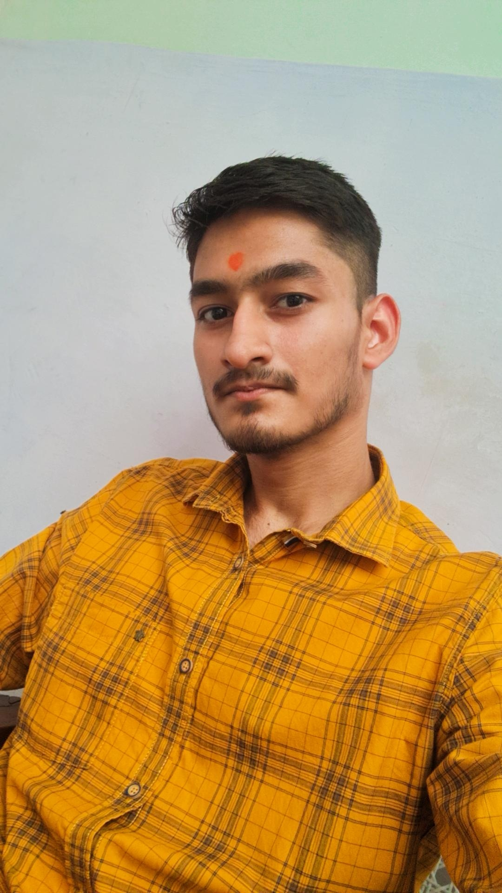

Akshit Sharma

Linkedin Profile |
X Profile |
Github Profile
Summary
Enthusiastic Computer Science student at AKGEC specializing in Artificial Intelligence and Machine Learning. Proficient in Data Structures and Algorithms (DSA), with a solid foundation in problem-solving techniques. Experienced in full-stack development using the MERN stack (PostgreSQL, Express.js, React, Node.js), enabling the creation of dynamic and responsive web applications. Passionate about leveraging technology to build innovative solutions and eager to apply my skills in real-world projects.
Education
| S.No. |
School/Institution |
Class |
Stream/Branch |
Timeline |
Percentage/SGPA |
Location |
| 1.) |
Vidya Bal Bhawan Public School |
10 th |
Science |
Apr. 2019 - Mar. 2020 |
91 % |
Vasundhara, Ghaziabad, Pincode - 201012 |
| 2.) |
Sidhhartha Senior Sec. Public School |
12th |
PCM |
Mar. 2021 - Mar. 2022 |
76.4 % |
Januti, Delhi, Pincode - 110001 |
| 3.) |
Ajay Kumar Garg Engg. College |
- |
CSE(AI & ML) |
Oct. 2023 - Sept. 2027 |
9.0 |
Dasna, Ghaziabad, Pincode - 201015 |
Work Experience
Web Development Intern - Froyo Technologies
Oct 2024 - Nov. 2024
- Internship Experience: Gained practical insights into IT industry operations through hands-on experience in a collaborative environment.
- Web Development Training: Completed an online web development course, enhancing my technical skills in building responsive applications.
- Project Contribution: Assisted in developing and maintaining web applications, contributing to team projects and improving overall functionality.
Projects
Speech-to-Text Web App | React with vue.js, TailwindCSS, HTML, JavaScript.
Dec. 2024 - Jan. 2025
- Developed a real-time Speech-to -Text convertor using frontend frameworks
- Integrated the Speech Recognition package from NPM to implement Speech-to-Text functionality.
- • Ensured responsiveness and performance optimization for both mobile and desktop platforms
Certifications
MERN Stack Web Development - Udmey Bootcamp
Oct. 2024 - Jan. 2025
- Full-Stack Development : Gained hands-on experience building dynamic web applications using MongoDB, Express.js, React, and Node.js, enabling seamless data flow and user interaction.
- API Integration: Developed RESTful APIs for efficient data retrieval and manipulation, enhancing application functionality and user experience.
- Responsive Design: Implemented responsive UI/UX designs with React, ensuring optimal performance and accessibility across various devices and screen sizes.
Technical Skills
- Languages : C, C++, HTML/CSS, JavaScript, SQL.
- Frameworks : React, Node.js, Express, FastAPI, TailwindCSS.
- Databases : PostgreSQL
- Libraries : jQuery.
Interpersonal Skills
- Good Communication Skills.
- Ability to cope up with difficult situations
- Confident, Determined and Hardworking
- Strong Leadership and Teamwork./li>
Co - Curricular Activies
- Class Representative of my branch, AKGEC, Dasna.
- Member of Disciplinary committee.
- Actively participated in Technical & cultural events.
Personal Details |
My Hobbies